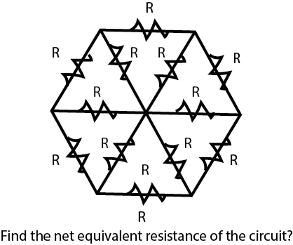
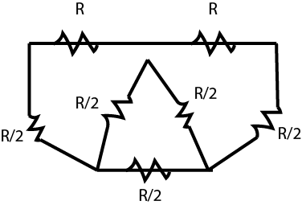
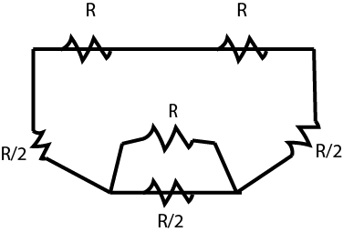

Tricks Tips and Motivation for IIT-JEE
30th April'2016
-Sunny Mazumder
Disclaimer : all tips and tricks are from my experience of preparation of JEE. What fits me doesn't means it will fit you,too. All the best.
Lets dig a little deeper to explore how we can use our innovativeness and creativity to get more extra marks. Yeah ! I am not expert in the JEE world. I myself could not crack JEE Advanced :P . And managed only to get 176/360 in JEE mains.
So no need to follow me blindly, use your intellect and go ahead if you find it useful
(I am sure you will find many thing useful ! "Experience my friend" )
I am not going to discuss A-Z about JEE, as I assume if you are actually reading this, you are well aware of all the facts about JEE- its success rate,
difficulty vast syllabus and blah blah blah.
I am not going to teach you about physics, chemistry or maths. Rather I will try to convey is how to have proper attitude to crack entrances.
Trust me, the most important "secret ingredient" during the preparation is CONFIDENCE AND FAITH.
No matter how much you are lagging behind your preparations, no matter even if you have wasted 75% of your two years time doing shitty stuffs, no matter how screwed and fucked up you already are, don't lose hope my friend. Its the most crucial time to have endless limitless confidence. Its time to show the champion You. "BRING IT ON" .
The bottom line is - have immense faith in yourself that you will do awesome in jee mains or any damn entrances. You can generate the faith and belief by using the AUTOSUGGESTION METHOD for 21 days. Sar pe jab junoon chadh ta boss kuch nahi chahiye...Woh Junoon Chahiye
Enough of attitude-conciousness! Now lets come little to study zone.
Some of you may be doing coaching, some may be doing self study, some having private tutions.
I will advice you if you have proper source of good coaching, join it("If there isn't any financial issue.")
In case you couldn't or haven't joined any coaching, don't worry man. Cheer up! You still stand the same chance to crack JEE, its just that you need to plan yourself, work yourself and work harder+smarter. Remember coaching is just a help, its you afterall who will crack the dam JEE.
If you can, then you may register yourself for a DLP program of good coaching, if possible( I strongly suggest that).
Those who can't afford it or any other problem. No need to get demotivated buddy ! You can still do great with the classical books for JEE.
BOOKS :
I am sure you know what books to read/solve. There are so many stuffs in internet regarding the same. I don't know which books you are using , but one damn thing I would like to clear it out : "Don't get too much confused with books. Select one which you feel good enough and comfortable. Don't get into the trap of using too many books. The trap is really really viciously bad. Select and stick to it unless its too bad."
TIME MANAGEMENT :
It is the key to do good. Start seriously just after your 10th ends. Don't waste your vacation after boards. Those who already wasted your 11th or such, don't lose hope. I am repeating again, FAITH IS THE MAGIC PILL, which can do miracle beyond the limit of science. Just start it, start studying, everything will fall in place once you start the process, no matter how late you are. I am sure you don't wanna get more late, So start it buddy.
"TRICKS YARD" - Secret Tips and Tricks !
1) LOGICAL GUESSING - Negative Marking is just an illusion
In exams like JEE and other MCQ entrances, I have seen people who answers only when they are completely sure about the correctness to avoid negative marking.
But let me tell you , its a crap method ! Negative marking is just to demoralize you for blind guessing. If you use guessing bit sensibly and logically , you will never lose marks. Let me show you how to do better guessing:
In entrances such as JEE mains, where each correct one gets you 4 marks and one incorrect costs you 1 mark (ie, negative 1). Take any set of 5 questions - if out of the 5, you get one correct and rest wrong = 4(correct one ) - (1*4)= 0. So you don't lose any mark even if you get one correct. And chances of getting atleast one correct out of five is pretty high even if you mark option 'B' or 'C' for all the 5 questions. Probability is the secret here (Probability is one of my fav maths topic :D )
2) OPTIMIZING LOGICAL GUESSING
First and foremost aim is to solve all those problems which you do on your own. Then move to logical guessing zone, and Better you way to optimize the strategy discussed in part (1) is to select the set of 5 problems such that you may not be exactly sure of the answer but do know some clue. After selection of the set, we can further optimize the strategy. First thing is to "Change" your attitude buddy, the whole world will change for you. You don't need to solve the entire problem and derive the solution. The solution is given already, you just have to eliminate the wrong ones and select the correct one. Now Isn't that sounding awesome?? Yes its actually awesome.Eliminate 3 options and get the correct one. Also, Every question does have alteast one crappy option which is complete non sense, eliminate that and go ahead. I will be pointing out more elimination and guessing techniques in the next following points.
3) STAY AWAY FROM MAXIMUM OR MINIMUM
If you have no idea about the question and you are going for a guess, than alteast stay away from maximum or minimum values (it works in 70%).
4) COMMON BUT DIFFERENT
Many times you will find options like : (its an example from thermodynamics, applies everywhere)
(a)100 C
(b) 234 C
(c) 100 K
(d) 150 C.
I don't care the what the hell question may be, the answer will be OPTION (A) 80% of the times.
Still if you can't get what is "common and different" .See, Celsius is common in three options but different in option 'C'. And the value of option 'C' matches option 'A'.
5) N-Value METHOD
Q. what is the summation of the infinite series :
13 + 23 + 33 + 43 + 53 + . . .
(A) (n3*(n+1))/2
(B) ((n*(n+1))/2)2
(C) n2*(3*(n+1))
(D) (n*(n+1)*(n+2))/6
obviously its a simple question, but this method applies to all such questions no matter how complex the series or equation is. Lets see how :
lets check all this options for n=1 :
(A) (13*(1+1))/2 = 1
(B) ((1*(1+1))/2)2 = 1
(C) n2*(3*(n+1)) = 6
(D) (n*(n+1)*(n+2))/6 = 1
and the actual solution for n=1 is 13 which is = 1. So option C is complete crap. And rest are still valid .
Now lets check for n=2:
(A) (23*(2+1))/2 = 12
(B) ((2*(2+1))/2)2 = 9
(D) (2*(2+1)*(2+2))/6 = 4
for n=2: actual solution is : 13 + 23 = 9.
So obviously option (B) is correct .
Look we had no clue how to solve the series but will little innovativeness we did it. We can do it for any complex series or equations.
6) TRIGO - "NO" - METRY
If you don't hold good skills for trigonometry and you don't have enough time, please avoid the topic. You will need to study a lot and hardly there will be 2-3 questions. Further, it those questions are too complicated , you will not be able to solve it anyhow.
However, You can still use some creativeness to solve trigonometry problems.
Example problem,
Q. what is Sin2A equivalent to ?
(A) cos2A.
(B) tanAsecA
(C)sinAcosA
(D)cotAtanA
Put different values of 'A', and get the answer. This trick often helps in trigonometry
7) DIMENSIONAL ANALYSIS
This chapter of physics is often so ignored . But it has a lot of awesome applications. Yeah, atmost one question will come directly from this topic, but indirectly you may solve a lot of problems using dimensional analysis.
Example problem : A particle of mass xgram in rotating in a magnetic field B with electric field E. Find the maximum velocity with which the particle will move?
options will contains lots of terms of E,B,g(acceleration due to gravity) etc etc , forexample
(A) EXB (B) E2/B*g and blah blah.
If you can authentically solve it, thats awesome. Otherwise, dimensional analysis is the key to secret. For each option, get the dimensional value of the entire equation. And match it with dimensions of velocity. And the one matching is the correct one.Most of such questions will have one option matching, but You may find two matches , but that too increases the chances in guessing (from 25% to 50%). Isn't that a cool method ?
8) COORDINATE GEOMETRY AND ROUGH SKETCHES.
In Coordinate geometry, doing rough sketches often do wonders , if you are not skilled enough with lots of equations of normals,tangents etc.
Example problem: A circle is given , a tangent from another circle which intersects the diameter of the circle on the circumference at (X,Y), is intersecting the first circle on two points on the circumference. Find both the points of intersection.
If you are great with circle, tangents equations . Great go ahead and solve it. Otherwise, draw a rough sketch with given details in the problems, and see the point of intersection(ofcourse the point of intersection may not be exact with rough sketch but still it will be near to) .Now match it with the options. The closest one will be the answer. You can use this method for most of the coordinate geometry questions.
9) SYMMETRICAL CIRCUITS
Symmetry in circuits can be used to solve daunting problems easily.
Often questions are related to find the value of current flow or potential difference. Now the key principle is : Potential is same in the symmterical parts and hence no current will flow.
Now lets look at an example which can be solved easily with the concepts of symmetry.

Solving it authentically, may get your nuts go out.
Now lets see symmetry can do the magic.
Since the upper and lower part is symmetrical. We fold it.
It can be simplified to :

Further simplification :

Now solve it simply.
Isn't symmetry interesting. :)
10) CONFORMERS -organic chemistry
For questions related to organic chemistry conformers, the options are usually like these :
(A) Staggered
(B) Gauche
(C) Eclipsed
(D) Paritally Eclipsed.
No matter what the question is, the answer will be (B) Gauche - in 90% of cases.
11) DOMAINS 'N' RANGE PROBLEMS
For domain range problems,
Put the extreme values from options to see which satisfies the function. No need to solve the whole damn function. There's always a smarter way.
12) MODERN Physics
This is one topic that 90% students ignore or study very casually. And thats such a big damn mistake ! This topic has such a heavy weightage in JEE . Plus it is really a easy topic. There are hardly 7-8 types of questions and you can cover the entire modern physics in a single day.
13) 3D and Vectors
Please don't miss this topic. Its so easy and scoring. Here also there are hardly 6-7 types of problems. Problem setters never show creativity while setting problems from 3D or Vectors. Almost 95% questions are pretty straightforward.
14) HIT 'N' TRIAL
I would like to repeat again : solution is already provided, you just have to select one. And here 'HIT N TRIAL' comes really handy. Fit each option in the problem and see if it makes sense or not. Often this leads to correct solution.
WELL! ENOUGH OF TIPS AND TRICKS. Now its time to give your best. Not a wastage of single moment. Make the count of each second. Have faith^infinity.Study like a mad bull. Study as if you are bitten by a mad dog. Only one idea in your brain, nerves, eyes, mind, in every part of your body. Now! GO GO GO!